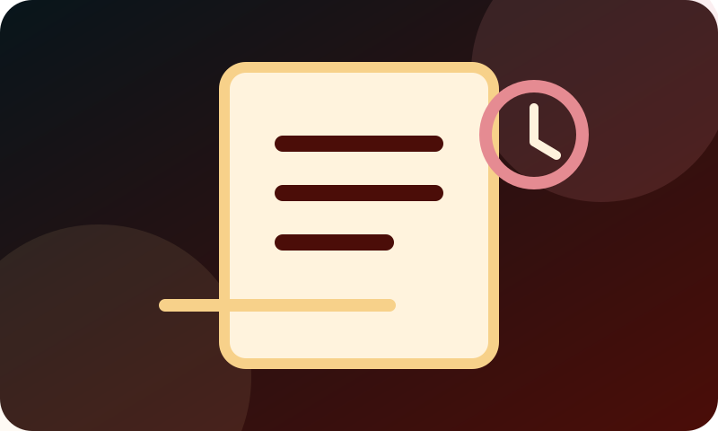

01
Sačuvajte dokumenta
Sačuvajte rešenje, obaveštenje, kovertu i sve što ste dobili. Nemojte bacati papir zbog kog ste se obratili.
Kada ne znate odakle da počnete
Ovaj vodič služi za početnu orijentaciju: šta da sačuvate, šta da zapišete, koje podatke da zaštitite i kako da pripremite osnovne informacije za dalju proveru.
Prva pomoć, bez lutanja
Kada stigne rešenje, obaveštenje ili informacija o blokadi, normalno je da se pojave strah i zbunjenost. Ne morate odmah znati sve pravne izraze. Prvo sačuvajte dokumenta, zabeležite osnovne podatke i proverite koji datum i rok pišu na papiru.
Ova stranica ne zamenjuje pravni savet niti može da garantuje ishod. Njena svrha je da vam pomogne da prvi korak napravite mirnije i organizovanije.

Prva pomoć
Pregledajte osnovne informacije, dokumenta i rokove pre nego što preduzmete sledeći korak.
01
Sačuvajte rešenje, obaveštenje, kovertu i sve što ste dobili. Nemojte bacati papir zbog kog ste se obratili.
02
Zabeležite datum prijema, broj predmeta, pošiljaoca, iznos i šta se trenutno dešava sa računom, platom ili imovinom.
03
Rok može teći i dok pokušavate da razumete dokument. Ako niste sigurni, nemojte ga sami tumačiti napamet.
Zaštitite svoje podatke
Javno ne šaljite JMBG, broj lične karte, broj računa, potpis ili celo rešenje. Ako je za razgovor potrebno pokazati dokument, koristite dogovoreni bezbedan kanal i proverite kome ga šaljete.
Za prvi kontakt dovoljno je opisati šta ste dobili, kada je stiglo i šta vas trenutno najviše brine.
Kada ne treba čekati
Posebno obratite pažnju ako postoji kratak rok, blokada računa, obustava plate ili penzije, popis imovine, najava prodaje ili dug koji uopšte ne prepoznajete. Tada je važno da se dokumenta i rokovi provere na vreme.
Važno: sadržaj je informativan i ne predstavlja pravni savet niti garanciju ishoda. Konkretan slučaj zahteva proveru dokumenata, rokova i svih okolnosti.